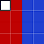
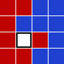
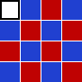

You probably know the game Fifteen Puzzle. Here, instead of numbered tiles, we have seven red tiles and eight blue tiles.
A move is denoted by the uppercase initial of the direction (Left, Right, Up, Down) in which the tile is slid, e.g. starting from configuration (S), by the sequence LULUR we reach the configuration (E):
| (S) |  | , (E) |  |
For each path, its checksum is calculated by (pseudocode):
$$\begin{align} \mathrm{checksum} &= 0\\ \mathrm{checksum} &= (\mathrm{checksum} \times 243 + m_1) \bmod 100\,000\,007\\ \mathrm{checksum} &= (\mathrm{checksum} \times 243 + m_2) \bmod 100\,000\,007\\ \cdots &\\ \mathrm{checksum} &= (\mathrm{checksum} \times 243 + m_n) \bmod 100\,000\,007 \end{align}$$ where $m_k$ is the ASCII value of the $k$th letter in the move sequence and the ASCII values for the moves are:| L | 76 |
| R | 82 |
| U | 85 |
| D | 68 |
For the sequence LULUR given above, the checksum would be $19761398$.
Now, starting from configuration (S), find all shortest ways to reach configuration (T).
| (S) | , (T) |  |
What is the sum of all checksums for the paths having the minimal length?
solve() → ?